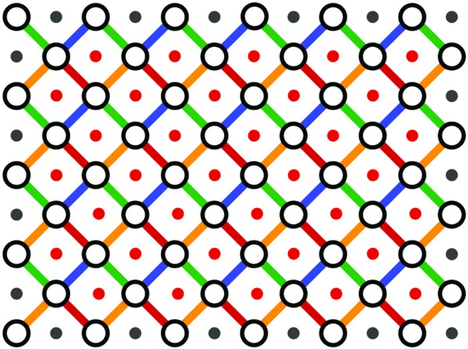
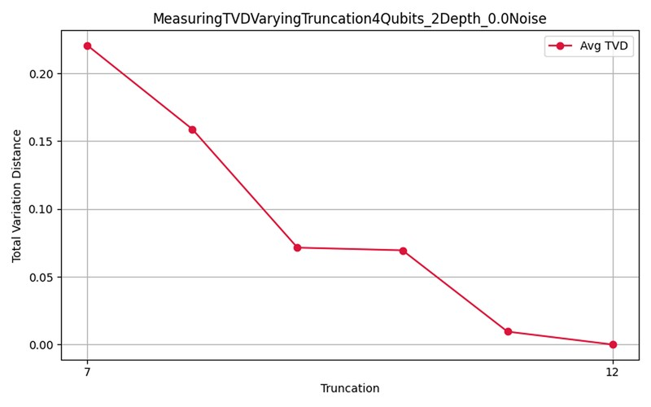
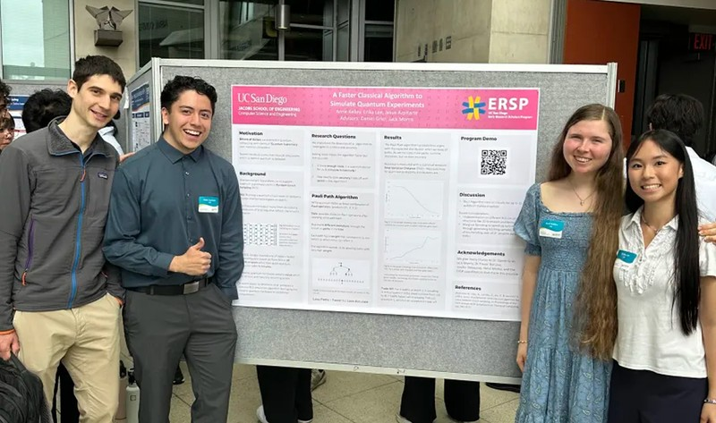

This is an in-depth showcase of my computer science projects.
Quantum Computing Research
Description
Collaborated with professors, graduate students, and a team of undergraduates to implement and analyze the performance of a quantum algorithm's novel classical implementation.
Role
Developed brute-force/spoofing algorithm for the project and conducted data analysis on the performance of the algorithms on different statistical comparison benchmarks.
I was tasked with implementing the brute force RCS algorithm using two different quantum circuit structures. This means I had to implement the model for a literature-standard practice of gatheing random samples of a circuit in quantum computing. The lack of relavent implementations of the algorithm made implementation difficult. Tools like LLMs had limited utility as the subject matter was so niche. Despite these hurdles, I was able to dig through multiple research papers that describe the algorithm through different circuit architectures.

Diagram of two-dimensional brickwork architecture used in random circuit sampling. This was implemented in Python by Jesus Azpitarte.
Photo Credit: He-Liang Huang, Youwei Zhao, Chu Guo. How to Design a Classically Difficult Random Quantum Circuit for Quantum Computational Advantage Experiments. Intell Comput. 2024;3:0079. DOI:10.34133/icomputing.0079
RCS Data Analysis
Since we were using my implementation of brute force RCS to compare against the team's novel implementation, we also needed a system for analyzing and comparing the results of our computations. I implemented a data analysis notebook which allowed us to measure our brute force computations on different parameters. Parameters like circuit size, shape, and error rate. The challenging parts were organizing the information to enable efficient computation and evaluation.
Given the number of parameter combinations, this was a challenge. Only by analyzing the data's inherent structure and maintaining consistent file architecture was I able to showcase our findings.

Graph showcasing a negative relationship between statistical comparison benchmark
TVD over a truncation range of 7–12.
Graph data was constructed and analyzed by Jesus Azpitarte using Python.
Working in a Team
For this research project, everyone was assigned to a different section of the program. This made it difficult to deal with the inputs and outputs of everyone's code. Documentation and communication was pivotal to account for that chasm. I learned that starting early with documentation is essential for maintaining project longevity.
Before this project, I was mostly a solitary worker but being in such a reliable and helpful team absolutely blasted me out of my shell. When people rely on me in a team base enviornment, it pushes me to acheive my goals and ensure quality is maintained.

Group photo of all Jesus' research mates at
ERSP (Early Research Scholars Program) 's annual research symposium.
Literature Review
Although I had a previous interest in skimming the Quantum Physics side of Youtube, I had absolutely no experience with the vastly mathematical field of Quantum Computing. To obtain even a franction of understanding, I conducted a literature review surrounding the Random Circuit Sampling topic. It was common for me to stumble on every other word in an article's sentence, but the effort was well worth it. Ensuring the literature I consumed intersected with my research question saved me lots of time and effort.